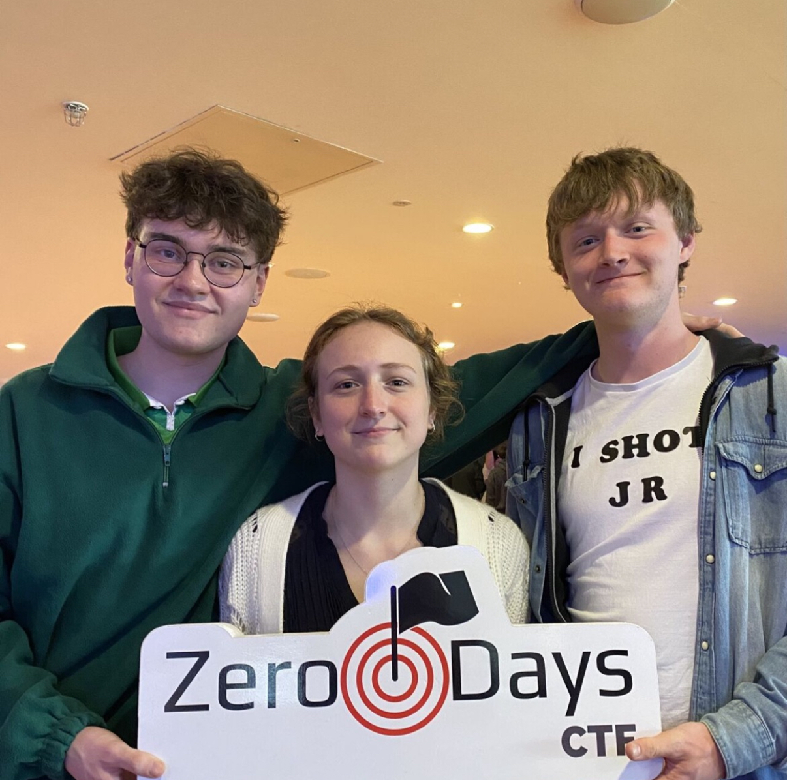
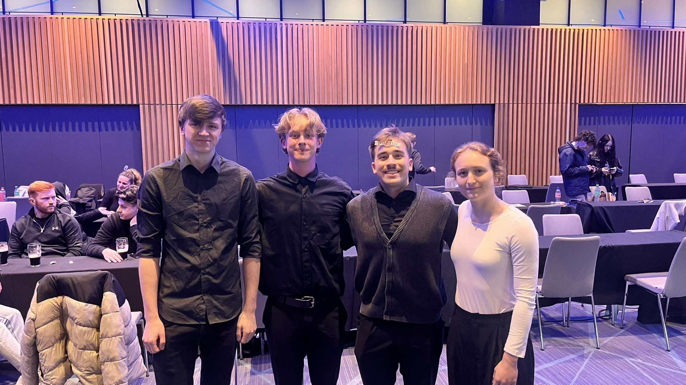
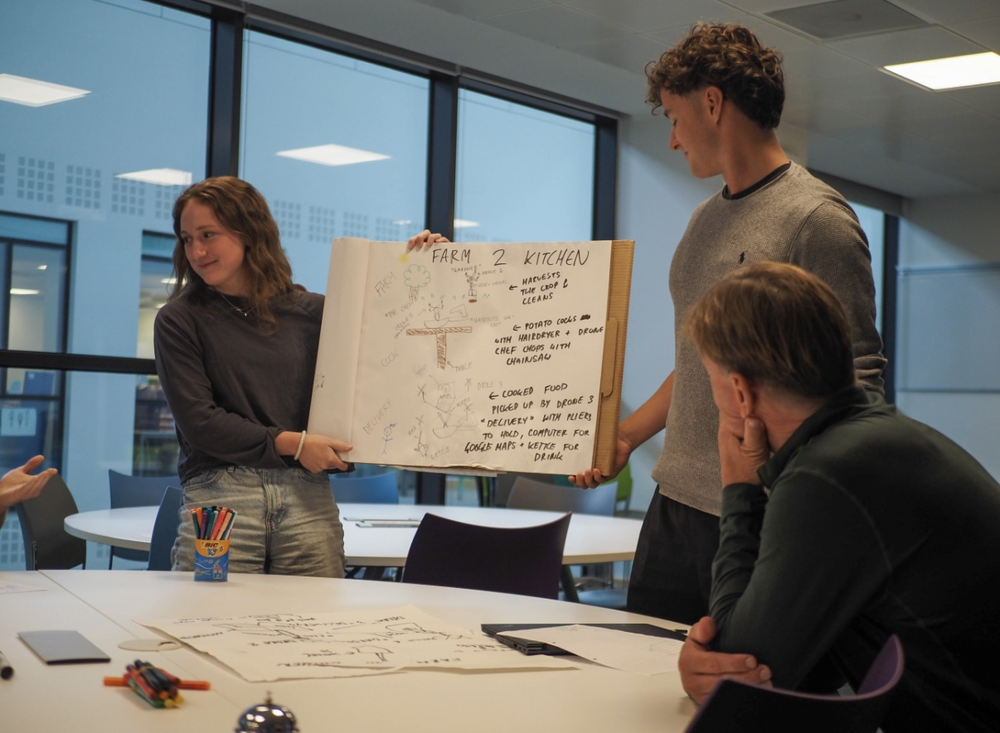
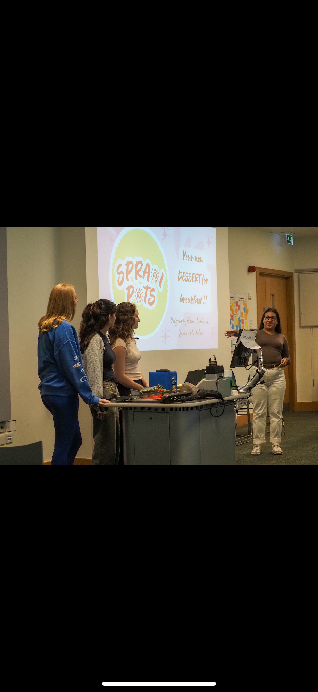

Capture the Flag (CTF)
My first CTF was at Galway University, which got me hooked on hands-on security.
My second was Zero Days, where our team ranked in the open category.
These events sharpened skills in web, crypto, reversing, OSINT, and fast teamwork under pressure.


Essentials to Entrepreneurship (UCD Innovation Academy)
I completed Essentials to Entrepreneurship in the Innovation Academy at UCD,
an experiential course designed to help students think and work like entrepreneurs. We spent significant time
learning the mindset through lessons (customer discovery, value propositions, business models,
branding, and pitching), activities (rapid prototyping, market interviews, and testing assumptions),
and structured reflections that pushed us to iterate and improve based on evidence.
We then put those skills into practice with a team project. Our brief was to design a product that is
sustainable, ready-to-eat, and attractive to the Irish market.
Our team created Spraoi Pots (“Spraoi” means fun in Irish): a premium Greek yogurt paired with granola.
The concept focuses on locally sourced ingredients, eco-friendly packaging, and a
social impact model where a portion of revenue supports Irish farmers. We explored positioning Spraoi Pots
as a protein-forward, grab-and-go option for students, athletes, and health-conscious consumers, with an initial
channel strategy of high-end markets and fairs before scaling to retailers.
As part of the project, we developed branding, unit economics, and a go-to-market plan, then delivered a final pitch to the class.
You can view the presentation here:
Spraoi Pots Pitch (PDF)
.


Clubs & Involvement
I’m involved in Lacrosse, Networking Society, Women in STEM,
Sub-Aqua, AI in Medicine, and Mountaineering.
I serve on the executive committee of the brand-new AI in Medicine club, focusing on
the computer science side and collaborating with technical partners. The society is
still being set up, and details are actively being worked out.
College Courses
As part of my Computer Science with Data Science degree at UCD, I have completed a
wide range of courses spanning programming, mathematics, systems, and communication.
Below are the courses I’ve finished, those I am currently completing, and those
planned for the coming spring semester.
Completed
- Language Use and Communication (LING10010)
- Algorithmic Problem Solving (COMP10030)
- Introduction to Computer Architecture (COMP10040)
- Formal Foundations (COMP10070)
- Computer Programming I (COMP10110)
- Functional Programming (COMP10300)
- Matrix Algebra (MATH10200)
- Software Engineering Project I (COMP10050)
- Computer Programming II (COMP10120)
- Storytelling (DSCY10100)
- Foundations of Mathematics for Computer Science I (MATH10210)
- Foundations of Mathematics for Computer Science II (MATH10220)
- Statistics with Python (STAT10430)
- Materials in Society (DSCY10070)
- Digital Systems (COMP20020)
- Databases and Information Systems I (COMP20070)
- Discrete Mathematics for Computer Science (COMP20110)
- Computer Networking (COMP20320)
- Object-Oriented Programming (COMP20350)
- Software Engineering Project II (COMP20050)
- Intro to Operating Systems (COMP20180)
- Data Structures (COMP20280)
- Algorithms (COMP20290)
- Linear Algebra II (MST20050)
In Progress
- Intro to Research and Scientific Communication (COMP31000)
- Probability (STAT20200)
- Data Science in Python (COMP30760)
- Introduction to AI (COMP30030)
Planned (Spring)
- Data Science in Practice (COMP30780)
- Network Analysis (COMP30850)
- Programming for Big Data (COMP30770)
- Information Visualisation (COMP30750)
With another full year of courses still ahead, I am on track to graduate in
2027 with a strong foundation in computer science, mathematics,
and data science.